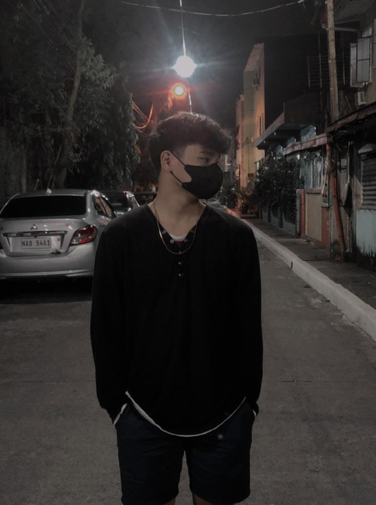
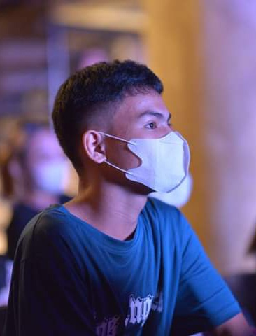
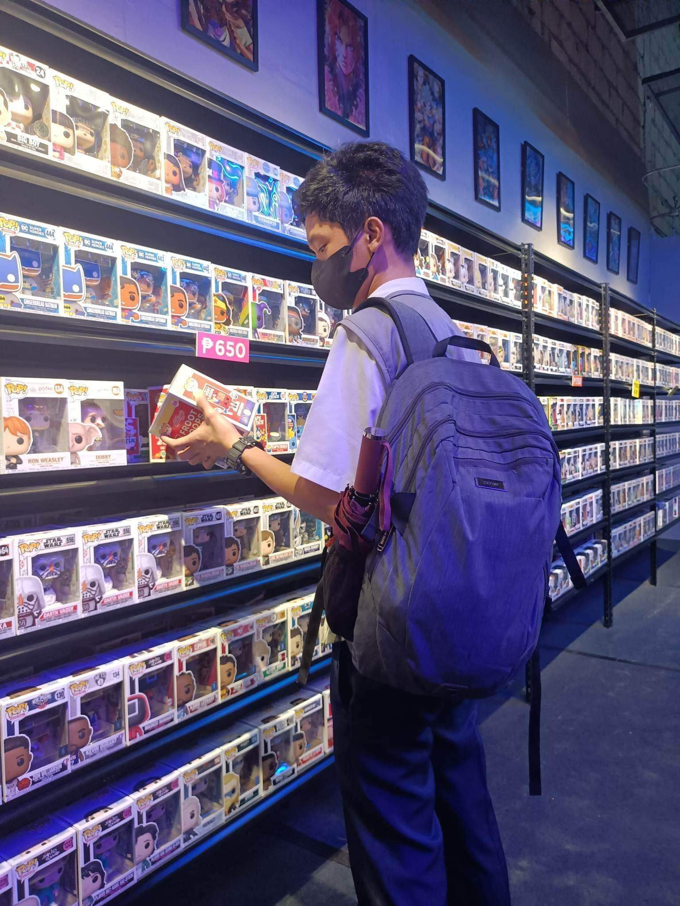
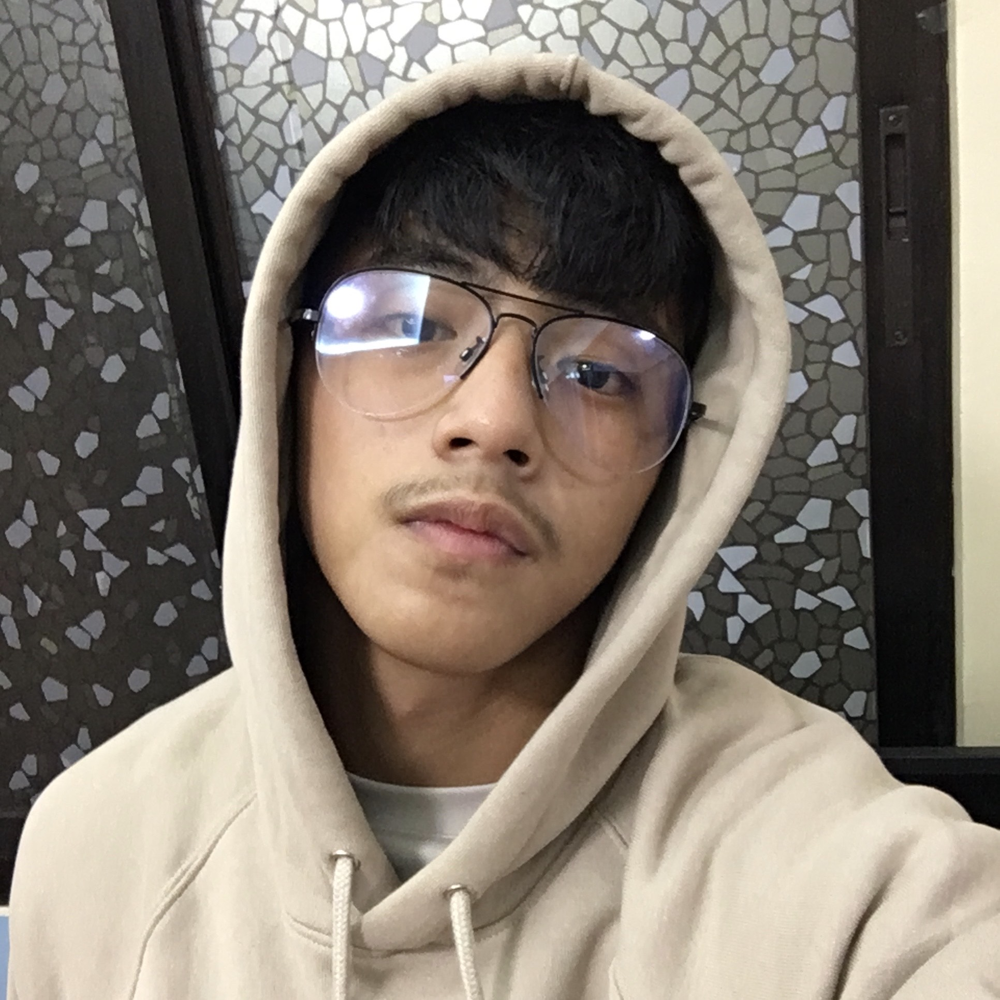
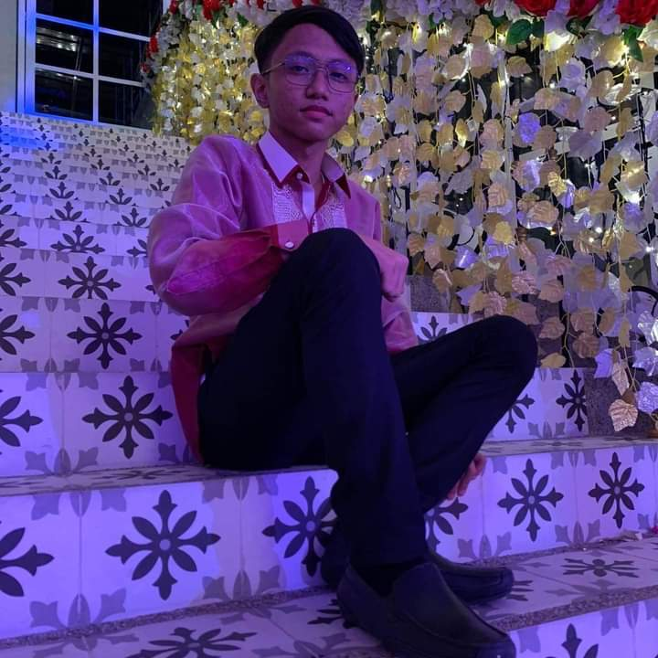

A website that can offer an interactive learning experience and a platform that makes knowledge accessible to everyone.
Learn More"Be who you are and say what you feel."
I am a student with a basic mind in many different ways. Most people never stop learning new things. Learning gives us the ability to do better. Playing video games, traveling, and interacting with family and friends are some of my passions. And I'll never forget that while we might have similar knowledge, experiences, contexts, and ways of thinking, as long as we keep doing what we're doing, we become smarter.
Being an IT student isn’t that hard because there is so many different ways to improve your skills. I personally learn something about our program and yet I still discovering many things as I continue to learn by myself. As we learn all by ourselves we get more tips and ideas on, every week day I do coding to learn more about our program and help my groupmates.
I am a passionate person because I believe that being passionate requires dedication, hard work, focus, and the willingness to fail repeatedly. My other interests include eating, video games, and playing instruments such as the piano and bass. I absolutely love cats because they are beautiful, intelligent, purring pets who love and delight us every day.
I am a person who values social interaction and rarely enjoys activities in groups. Effectiveness tends to be more important to me than social harmony.
I'm a person that always brings joy and happiness to my friends. I think that taking on new challenges or learning new things makes you stronger. Cooking, watching, playing video games, and listening to music are some of my pastimes. Also, I enjoy playing table tennis and billiards. I also adore playing with cats and dogs because they make me happy.
I'm a loyal person and I always care about my friends and family. I'm very active at night rather than day. I'm always happy whenever I hangout with my cousins and also my friends. Sometimes I get anxious.
"A life without fame can be a good life."



"Mission defines strategy and strategy defines structure."
Our goal is to create a website where we can share some of our experiences and utilize it as a simple tool. This will be the desire for skills and information, as well as our willingness to hold an open mind and constantly recreate ourselves.
We would be able to store our photography and recordings for ourselves, continuing our mission to archive and keep our experiences in hopes of not losing them in the future. In order to prevent losing beautiful memories to us as students, we considered this type of website to be valuable.
Our objective is to create a website that will serve as a digital diary and showcase our friendship's most memorable moments and experiences. Every time we spend time with each other, whether inside or outside of school, we're going to document each and every piece of it.
"Opinion is the medium between knowledge and ignorance."

My life has been filled with memories, just like everyone else's. We recall both the happy and the bad days that have passed. Their time at school is undoubtedly one of their fondest recollections. In fact, many people believe it to be the best time of their lives. A student understands the value of education and views their time in school as their most prosperous time. Why shouldn't it be, then? It is the first experience that has a lasting impression on a person, and its significance can never be disputed.

I made a lot of friends in high school, and I'll never forget the memories we shared. It all started when I joined Chess intramurals in junior high. Although I did not advance to the finals, I am pleased with the experience I gained from that particular event. This senior high school is where I met these students, and we eventually became friends. And this website that we created, despite the fact that there were many tasks assigned to us, we worked together to complete it.